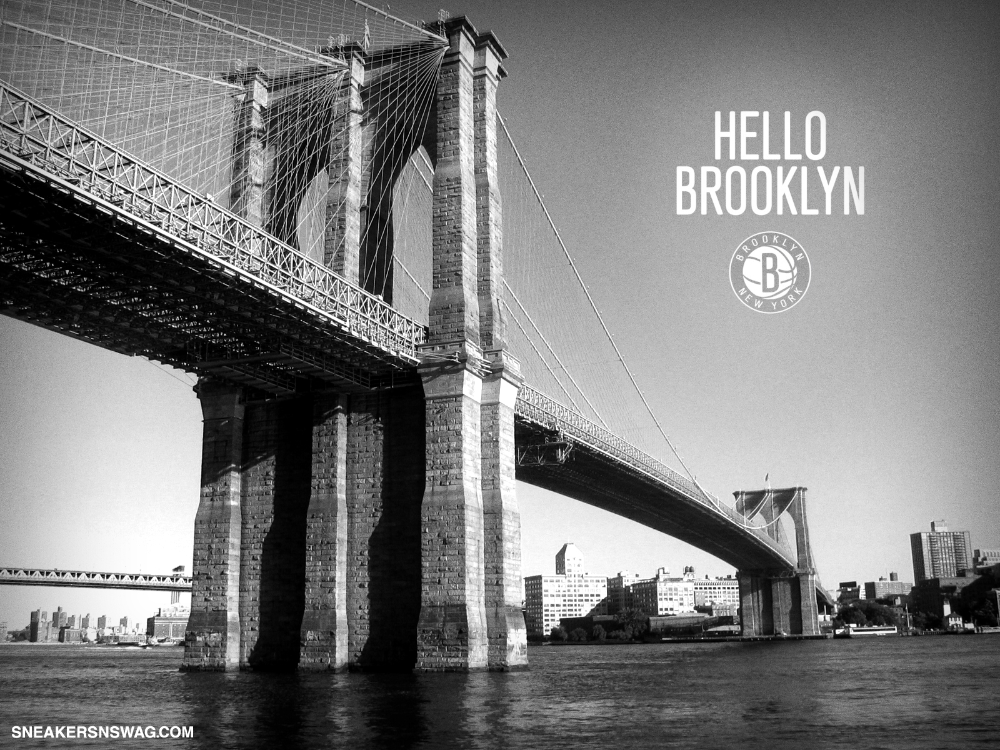

The Brooklyn Nets are an American professional basketball team based in the New York City borough of Brooklyn. The Nets compete in the National Basketball Association (NBA) as a member of the Atlantic Division of the Eastern Conference. The team plays its home games at Barclays Center. They are one of two NBA teams located in New York City; the other is the New York Knicks. The club was established in 1967 as a charter franchise of the NBA's rival league, the American Basketball Association (ABA). They played in New Jersey as the New Jersey Americans during their first season, before relocating to Long Island, New York, in 1968 and changing their name to the New York Nets. During this time, the Nets won two ABA championships (in 1974 and 1976). In 1976, the ABA merged with the NBA, and the Nets were absorbed into the NBA along with three other ABA teams (the San Antonio Spurs, Indiana Pacers, and Denver Nuggets), all of whom remain in the league to this day. In 1977, the team returned to New Jersey and played as the New Jersey Nets from 1977 to 2012. Led by star point guard Jason Kidd, the Nets reached the finals of two consecutive NBA seasons (2001–02 and 2002–03), but failed to win either title. In the summer of 2012, the team moved to Barclays Center in Brooklyn, becoming the first major sports franchise in the borough since the departure of the Brooklyn Dodgers baseball team in 1957. Since moving to Brooklyn, the Nets have qualified for the playoffs on seven occasions, including trips to the Conference Semifinals in 2014 and 2021. The Brooklyn Nets were founded in 1967 and initially played in Teaneck, New Jersey, as the New Jersey Americans. In its early years, the team led a nomadic existence, moving to Long Island in 1968 and playing in various arenas there as the New York Nets. Led by Hall of Famer Julius "Dr. J" Erving, the Nets won two ABA championships in New York before becoming one of four ABA teams to be admitted into the NBA as part of the ABA–NBA merger in 1976. Unlike the other three ABA teams entering the NBA, who played in cities without any NBA presence, the Nets were required by the NBA to pay an "encroachment fee" of $4.8 million (equivalent to $23 million in 2021) to the New York Knicks. The team financed that payment by selling Erving's contract to the Philadelphia 76ers; and the Nets went from winning the last ABA title in 1975–76 to having the worst record in the NBA in 1976–77. The team then moved back to New Jersey in 1977 and became the New Jersey Nets. During their time in the state, the Nets played in two consecutive NBA Finals in the 2001–02 and 2002–03 seasons, led on the court by point guard Jason Kidd. After playing 35 seasons in New Jersey, the team moved back to the state of New York, changed its geographic name to Brooklyn, and began playing in the new Barclays Center, starting with the 2012–13 NBA season.The team's move from New Jersey to Brooklyn was approved unanimously by the NBA Board of Governors on April 13, 2012.
